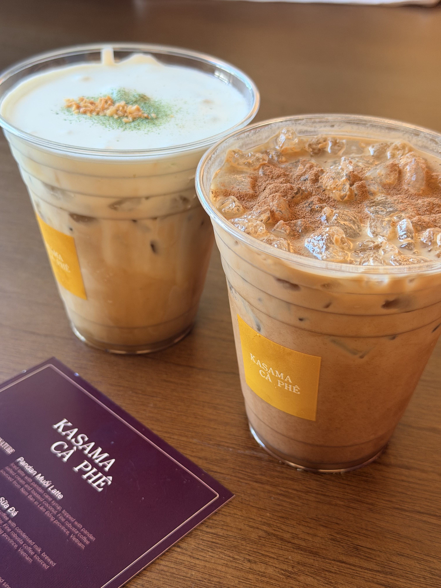

August 2026
Why we need to keep creating
Artifacts make our learning reusable and our work visible.

Personal notes
Writing helps me notice what I think. This is where I leave a record.
Writing
August 2026
Artifacts make our learning reusable and our work visible.

August 2026
Expression makes it possible to be known, understood, and helped.
July 2026
On writing with more care, finding kindred minds, and making sense of my own thinking.
About
This is Chen Yinuo’s corner of the internet. It is deliberately small, and will grow one thought at a time.